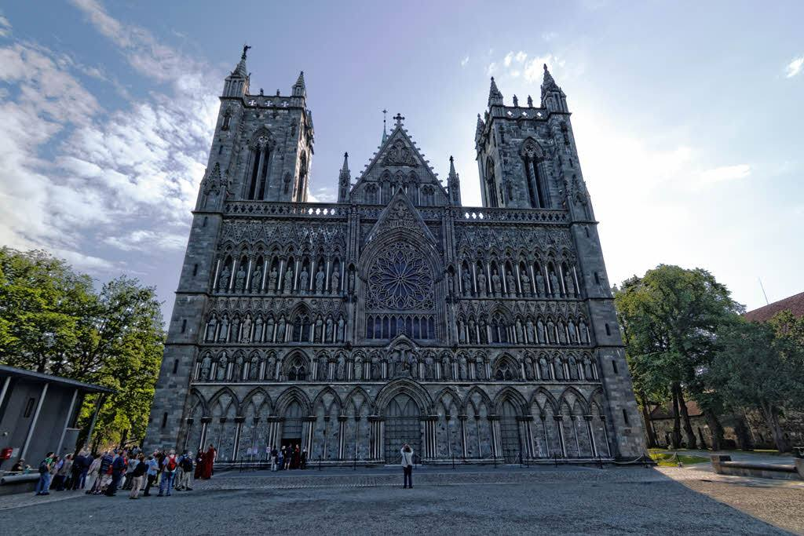
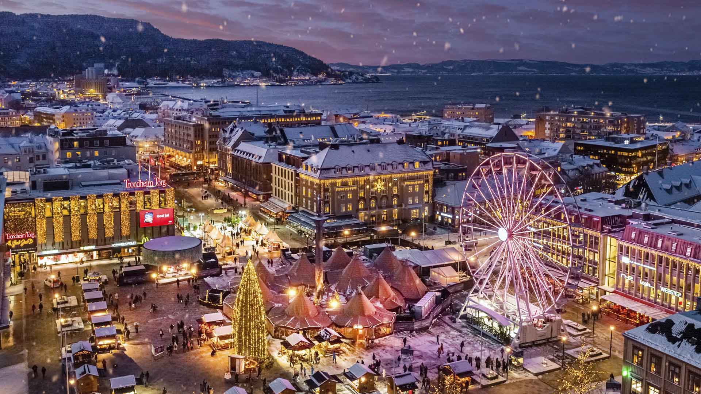
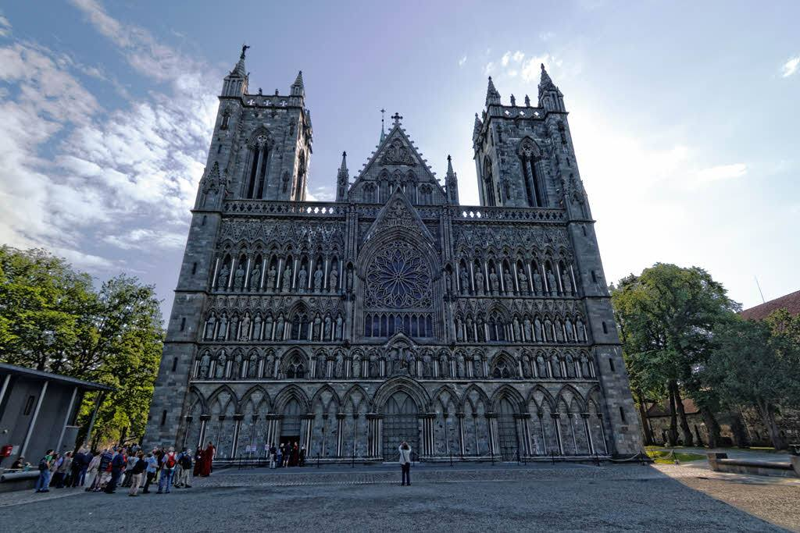
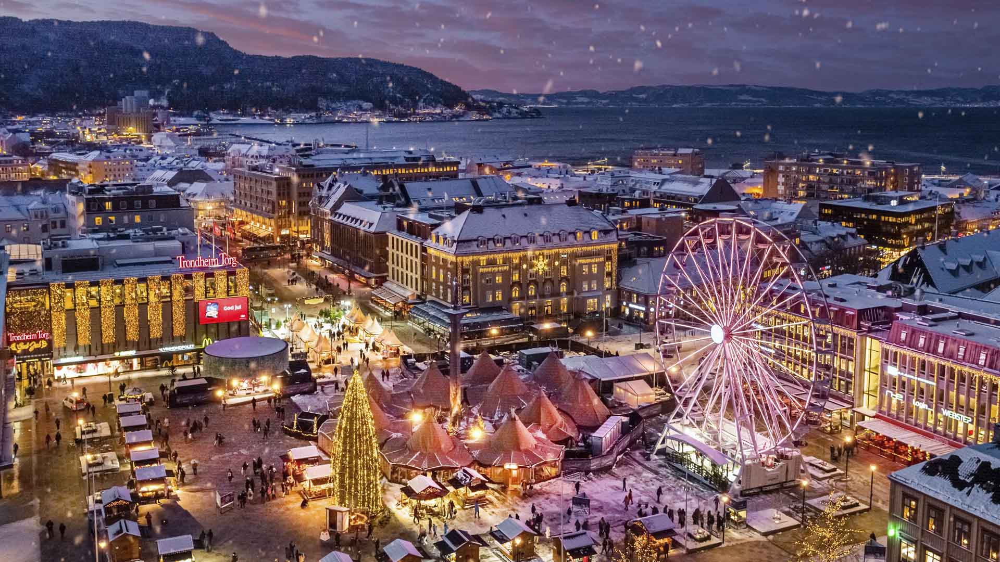

Did You Know This About Trondheim?
Trondheim is a city and municipality in Trøndelag county, Norway. It has a population of over 200.000 people as of 2020 and it's only increasing because it is the biggest student city in all of Norway, housing NTNU Trondheim. It also has the Nidarosdomen, which is very popular to take photos of and is a major tourist attraction in Trondheim.
1. The city is more than one thousand years old. It was founded in the year 997 as a trading post given its strategic location on the Trondheim fjord and Nidelva river. Rock carvings in the surrounding region show that people have lived here for thousands of years.
2. The city's founder was a Viking King. Viking King Olav Tryggvason founded the city as a trading post in the year 997. It was frequently used as the seat of the king, and therefore served as the capital of Norway.
3. Trondheim's original name was Nidaros. Named after the Nidelva river, the city was also known as Kaupangr í Þróndheimi (“the city in Trondheim/Trøndelag”). During the Middle Ages, people began to use Þróndheimi—becoming Trondhjem—a spelling that you still see to this day. Nidaros remains in use as the name of a diocese in the Lutheran Church of Norway, and in the name of several clubs and sports teams.
 


